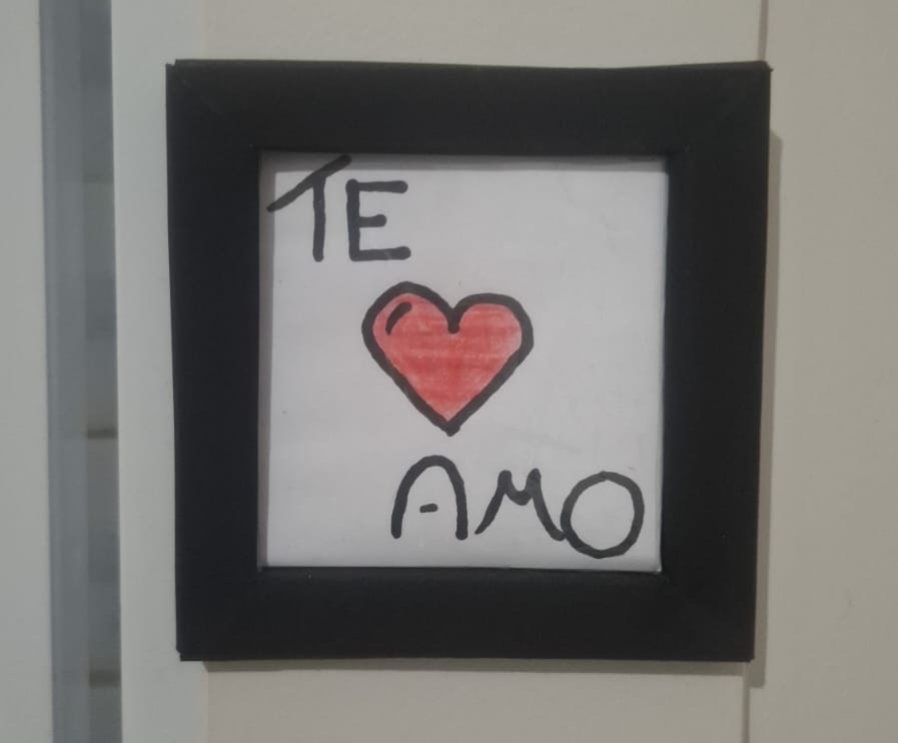

Com o aumento contínuo da população em áreas urbanas, diversos desafios se destacam em meio a este desenvolvimento, como situações precárias decorrentes do mau planejamento voltado aos resíduos sólidos, isso acarreta a emissão de poluentes no ar e na água.

Para descartar corretamente o lixo reciclável, é crucial separá-lo do lixo comum e adicioná-los em sacos próprios para isso, que são disponibilizados pela prefeitura de forma totalmente gratuita.
Caso você possua um resíduos que seja cortante, como: vidros, agulhas e lâminas, coloque-os dentro de uma caixa de leite vazia, feche-a bem e sinalize para que tenham cuidado.
Se não for possível separar por tipo, plásticos, vidros e metais podem ser descartados juntos.
No caso de fluídos, como o óleo de cozinha velho, você pode armazená-lo em um recipiente de plástico e um fim apropriado para isto seria usá-lo na criação de sabão, mas caso você não queira isso, poderá procurar alguém que queira utilizar o óleo.
O transporte de resíduos recicláveis trafega por toda a cidade, então não é necessário colocar exatamente os pontos de coleta, facilitando e incentivando sua prática. Basta apenas o cidadão colocar a BAG no portão de sua residência ou em um local visível para ser coletado.
O caminhão de coleta atua no período diurno, assim os moradores não têm preocupação ou falta de disponibilidade ao disponibilizar seus resíduos para coleta.
Você pode solicitar sua BAG na garagem da prefeitura, sem custo ou cadastro, a retirada é livre e imediata para qualquer cidadão que se comprometa a manter a prática consciente de reciclagem, você pode encontrá-la em: garagem da prefeitura
Nos empenhamos em mostrar que a reciclagem também pode ser algo divertido, onde utilizamos itens que temos em casa para construir algo, usando apenas por exemplo: Papelão, Fita Adesiva e retalhos
Onde fizemos quatro espadas tematicas apenas como divesão, mostrando que reciclagem também é criatividade e cultura.
Também passamos pelo dia dos namorados e não poderiamos dexar de presentear alguém que amamos, feito com apenas papel e um pouco de tinta.

Você pode se dirigir até o local ou entrando em contato por meio do telefone: (44) 3231-1222 - (44) 9 8826-9739 ou caso prefira enviar um e-mail para: contato@itambe.pr.gov.br
Você pode buscar mais informações acessando aqui.